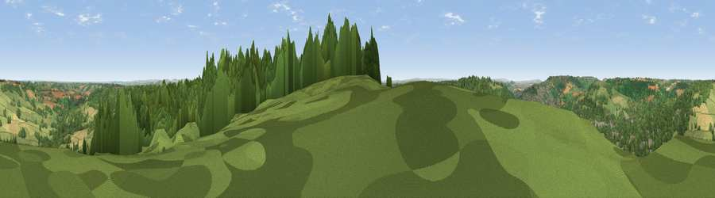

Viewpoint near Bathford
#10229 in England · top 14% of its area beats it · near BathfordWhere it is
The exact computed spot (ST 79475 66275). Click the marker for map links.
The view, rendered

A 360° render of this exact spot computed from the terrain model, tree cover and land cover — summer colours, afternoon light, calibrated against photographs of famous viewpoints. Real trees, hedges and buildings will differ in detail.
The panorama
Grey silhouette: terrain skyline in each direction (720 bearings, Earth curvature and refraction included). Dashed green: skyline with trees (+15 m) and buildings (+8 m) as obstacles. Blue strip: how far the ground is visible on each bearing.
Where the view opens
Wedge length = distance to the farthest visible ground on that bearing (vegetation-aware). Rings at 10, 25 and 50 km.
What fills the view
50% woodland · 37% grassland · 7% built-up · 6% cropland
Angular shares of the visible panorama (visual magnitude), not map area. Landscape diversity 0.46 (0–1 Shannon).
Key numbers
More beautiful places nearby
The staircase of upgrades: each row has a higher view potential than everything closer. Driving times are estimates from straight-line distance, calibrated against real road routing — check an actual route before setting out.
| Place | Direction | Drive | Score |
|---|---|---|---|
| Kelston Round Hill | W · 9 km | ~17 min | 74.2 |
| Viewpoint near North Stoke | WNW · 9 km | ~18 min | 75.4 |
| Hanging Hill | WNW · 9 km | ~18 min | 76.4 |
| Cley Hill | SSE · 22 km | ~36 min | 76.8 |
| Beacon Batch | WSW · 32 km | ~50 min | 79.4 |
| Viewpoint near Stinchcombe | N · 32 km | ~50 min | 80.5 |
| Nottingham Hill | NNE · 65 km | ~88 min | 80.9 |
| Garway Hill | NNW · 69 km | ~92 min | 84.6 |
51.39514, -2.29640 · source: screening · position refined by local search. Computed location — check access rights before visiting.